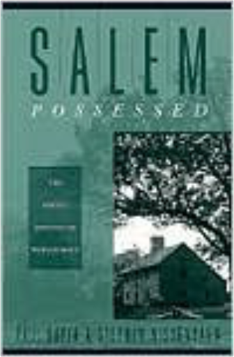
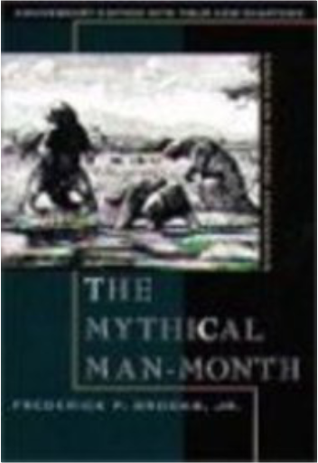

Second FoundationIsaac Asimov Second FoundationIsaac Asimov  Isaac Asimov's Foundation novels are one of the great masterworks of science fiction. As unsurpassed blend of nonstop action, daring ideas, and extensive world-building, they chronicle the struggle of a courageous group of men and women dedicated to preserving humanity's light in a galaxy plunged into a nightmare of ignorance and violence thirty thousand years long.  Athanasius : The Life of Antony and the Letter To MarcellinusAthanasius, Robert C. Gregg Athanasius : The Life of Antony and the Letter To MarcellinusAthanasius, Robert C. Gregg Athanasius: The Life of Antony and The Letter to Marcellinus Translation and introduction by Robert c. Gregg Preface by William A. Clebsch ConfessionsSaint Augustine The son of a pagan father and a Christian mother, Saint Augustine spent his early years torn between conflicting faiths and world views. His Confessions, written when he was in his forties, recount how, slowly and painfully, he came to turn away from his youthful ideas and licentious lifestyle, to become instead a staunch advocate of Christianity and one of its most influential thinkers. A remarkably honest and revealing spiritual autobiography, the Confessions also address fundamental issues of Christian doctrine, and many of the prayers and meditations it includes are still an integral part of the practice of Christianity today. Meditations: A New TranslationMarcus Aurelius A new translation, with an Introduction, by Gregory Hays OroonokoAphra Behn, Joanna Lipking This long-awaited Norton Critical Edition of Aphra Behn’s best-known and most influential work makes available the original 1688 text, the only text published in her lifetime.The editor supplies explanatory annotations and textual notes. Interest Group SocietyJeffrey M Berry, Clyde Wilcox Considered the gold standard on interest group politics, this widely-used text analyzes interest groups within the intuitive framework of democratic theory, enabling readers to understand the workings of interest groups within the larger context of our political system. Comprehensive coverage includes not only the traditional farm, labor, and trade associations, but also citizen groups, public interest organizations, corporations, and public interest firms Life in the Third ReichRichard Bessel Few historical subjects are so emotion-laden as the Third Reich, and few have generated such general interest. The extermination of the Jews has, understandably, commanded considerable attention from historians and the general public, but this preoccupation with Nazi anti-Semitism has led people to overlook other aspects of life under the Third Reich. The Bob's Burgers Burger Book: Real Recipes for Joke BurgersLoren Bouchard, Bob's Burgers New York Times Bestseller The Bob’s Burgers Burger Book gives hungry fans their best chance to eat one of Bob Belcher’s beloved specialty Burgers of the Day in seventy-five original, practical recipes. With its warm, edgy humor, outstanding vocal cast, and signature musical numbers, Bob’s Burgers has become one of the most acclaimed and popular animated series on television, winning the 2014 Emmy Award for Outstanding Animated Program and inspiring a hit ongoing comic book and original sound track album. Now fans can get the ultimate Bob’s Burgers experience at home with seventy-five straight from the show but actually edible Burgers of the Day. Recipes include the "Bleu is the Warmest Cheese Burger," the "Bruschetta-Bout-It Burger," and the "Shoot-Out at the OK-ra Corral Burger (comes with Fried Okra)." Serve the "Sweaty Palms Burger (comes with Hearts of Palm)" to your ultimate crush, just like Tina Belcher, or ponder modern American literature with the "I Know Why the Cajun Burger Sings Burger." Fully illustrated with all-new art in the series’s signature style, The Bob’s Burgers Burger Book showcases the entire Belcher family as well as beloved characters including Teddy, Jimmy Pesto Jr., and Aunt Gayle. All recipes come from the fan-created and heavily followed blog "The Bob’s Burger Experiment."  Salem Possessed: The Social Origins of Witchcraft by Paul Boyer, Stephen NissenbaumStephen Nissenbaum by Paul BoyerRighteous Indignation: Excuse Me While I Save the World!Andrew Breitbart Known for his network of conservative websites that draws millions of readers everyday, Andrew Breitbart has one main goal: to make sure the "liberally biased" major news outlets in this country cover all aspects of a story fairly. Breitbart is convinced that too many national stories are slanted by the news media in an unfair way. Jane EyreCharlotte Brontë, Richard J. Dunn The text reprinted in this new edition is that of the 1848 third edition text—the last text corrected by the author."Contexts" includes eighteen new selections and two new subsections: "Charlotte and Jane’s Illustrated Book" which includes a letter from Brontë to her publisher W. S. Williams; "Vignettes from Bewick"; and "Charlotte Brontë and Bewick’s "British Birds’" and "Charlotte Brontë as Governess," which includes letters to Emily Brontë, Ellen Nussey, W. S. Williams, and "The Governess-Grinders." "Criticism" collects six major essays on Jane Eyre, four of them new to the Third Edition. Contributors include Adrienne Rich, Sandra M. Gilbert, Jerome Beaty, Lisa Sternlieb, Jeffrey Sconce, and Donna Marie Nudd. A new Chronology and updated Selected Bibliography are also included.  The Mythical Man-Month: Essays on Software EngineeringFrederick Phillips BrooksClassic book on the human elements of software engineering. |
 Made with Delicious Library
Made with Delicious LibrarySpringfield, State zipflap congrotus delicious library Pedrie, John